Week07: Hamilton Chapter 4: Regression Diagnostics
1 Lecture Outline
Objective: Regression criticism allows evaluating whether the results of an OLS model can be generalized and become applicable to the unknown underlying population or, if they appear to be just specific to the observed sample observations.
\(\Rightarrow\) If all model assumptions are satisfied, then the sample-based regression model applies up to some random variations to the underlying population. That is, the estimated model is representative of the underlying data generating process \(\mathbf{y} = \mathbf{X} \cdot \boldsymbol{\beta} + \boldsymbol{\varepsilon}\) in the population.
Chapter Overview:
- OLS Assumptions
- New Terms: Efficient estimator, BLUE – Gauss-Markov Theorem, homoscedasticity, large sample properties, consistency
- Scatterplot matrix (relevant exploratory tool but trivial)
- Residual versus Predicted Plot => heteroscedasticity (both are uncorrelated)
- Measures identifying temporal autocorrelation.
- Non-normality
- Multicollinearity
- Influence Analysis: DFBetas
- Other Case Statistics: Studentized Residuals, Leverage and Cook distance
- Appendix: Basic time-series analysis (not test relevant)
2 OLS Assumptions
Role of assumptions:
- Simplify the complexity by imposing constraints onto the perceived underlying data generating process (basically suppressing variability).
- This simplification accelerates our capabilities to analyze the data.
- Whenever possible, the plausibility of assumptions for real world data needs to be evaluated.
OLS has several outstanding properties if its assumptions are met. These advantages even hold under mild violations.
Some violations of the assumptions can be addressed by refining the OLS model while remaining within the OLS modeling framework.
The advantages of OLS are:
Simplicity of the calculation of the estimator \(\mathbf{b}\) and its associated statistics using analytical rather than iterative estimation procedures.
Forced independence of residuals \(Corr(\mathbf{x}_k, \mathbf{e}) = 0\) and \(Corr(\hat{\mathbf{y}}, \mathbf{e}) = 0\).
Ease of interpretation as partial effects for purely linear models:
Remember:
[a] If the dependent variable is transformed the interpretation is only linear in the transformed regression system, but non-linear in the original scale of the variables.
[b] A simple interpretation is no longer possible once interaction effects are introduced.
The disturbances \(\varepsilon_i\) in \(y_i = E(y_i) + \varepsilon_i\) represent the sum of several small and unobserved influences, which due to the central limit theorem are expected to be normally distributed.
Under general conditions, regression parameters are
Unbiased, i.e., \(E[b_k] = \beta_k\), and
efficient, that is, \(Var(b_k) < Var(a_k) \Leftrightarrow E(b_k - \beta_k)^2 < E(a_k - \beta_k)^2\) for any alternative estimation rule \(a_k\).
Remember: Efficiency is only defined for unbiased estimators and
Consistent, that is, \(\lim_{n \to \infty} \Pr(|b_k - \beta_k| < \delta) = 1\) with \(\delta\) being an arbitrarily small positive constant. Therefore, for increasing sample sizes any potential bias vanishes and the standard error approaches zero, that is, estimators uncertainty approaches zero.
Under the conditions of i.i.d (independent identically distributed) and normal distributed disturbances, exact small sample tests for the estimates are available (e.g., F-test, t-test etc.).
The term small sample means: we know the exact distribution of a test statistic for any given number \(n\) of observations.
Regression criticism provides a mechanism to identify violations of the assumptions and point at potential cures of the problems that are induced by underlying model violations.
2.1 Assumptions about the model structure
- Assumptions related to the expected values:
[A1] Regressors \(\mathbf{X}\) are free of random effects or at least the randomness in an exogenous variable is uncorrelated with the model’s disturbances.
[A2] \(E(\varepsilon_i) = 0\) in the population.
These two assumptions lead to unbiased estimators \(b_k\) if
[a] all relevant variables \(\mathbf{X}\) are included in the model, or if
[b] missing relevant variables are uncorrelated with those variables already included in the model.
[c] in case that \(E(\varepsilon_i) \neq 0\) only the intercept \(b_0\) becomes biased. The remaining parameters remain unbiased.
- Assumptions about the variance and covariance of the disturbances \(\varepsilon_i\):
[A3] Homoscedasticity: \(Var(\varepsilon_i) = constant\ \forall\ i\) (\(\forall\) reads “for all”)
[A4] Independence among the disturbances: \(Cov(\varepsilon_i, \varepsilon_j) = \begin{cases} 0 & \forall i \neq j \\ \sigma^2 & \forall i = j \end{cases} \Leftrightarrow\)
\[Cov(\boldsymbol{\varepsilon}) = \sigma^2 \cdot \begin{pmatrix} 1 & 0 & \cdots & 0 \\ 0 & 1 & \cdots & 0 \\ \vdots & \vdots & \ddots & \vdots \\ 0 & 0 & \cdots & 1 \end{pmatrix}\]
If above assumptions are satisfied then the Gauss-Markov Theorem holds, which states that OLS is BLUE (best linear unbiased estimator).
Discussion of alternative structures of the covariance matrix under:
[a] Independence and Homoscedasticity => \(Cov(\boldsymbol{\varepsilon}) = \sigma^2 \cdot \mathbf{I}\)
[b] Heteroscedasticity \(\Rightarrow\) diagonal would no longer be constant 1
\[Cov(\boldsymbol{\varepsilon}) = \sigma^2 \cdot \begin{pmatrix} \omega_{11} & 0 & \cdots & 0 \\ 0 & \omega_{22} & \cdots & 0 \\ \vdots & \vdots & \ddots & \vdots \\ 0 & 0 & \cdots & \omega_{nn} \end{pmatrix}\]
[c] Autocorrelation \(\Rightarrow\) off-diagonal elements would no longer be zero
\[Cov(\boldsymbol{\varepsilon}) = \sigma^2 \cdot \begin{pmatrix} \omega_{11} & \omega_{12} & \cdots & \omega_{1n} \\ \omega_{21} & \omega_{22} & \cdots & \omega_{2n} \\ \vdots & \vdots & \ddots & \vdots \\ \omega_{n1} & \omega_{n2} & \cdots & \omega_{nn} \end{pmatrix}\]
and the terms \(\omega_{ij} = \omega_{ji}\) measure the relationship between the \(i^{th}\) and \(j^{th}\) pair of observations.
The exact specification of the terms \(\omega_{ij}\) depends on which model is chosen for the covariance matrix \(Cov(\boldsymbol{\varepsilon})\).
Problem: There are \(\frac{n \cdot (n-1)}{2}\) unknown covariance parameters and \(K\) unknown regression parameters but only \(n\) observations.
Problems: we can only observe the estimated sample residuals \(\mathbf{e} = (e_1, e_2, \ldots, e_n)^T\) but not the underlying population disturbances \(\boldsymbol{\varepsilon} = (\varepsilon_1, \varepsilon_2, \ldots, \varepsilon_n)^T\).
This complicates the testing of hypotheses. For instance,
Assumptions [A1] and [A2] cannot be tested because OLS estimation procedure guarantees these properties,
Even if all assumptions are satisfied there will always be some baseline correlation among the estimated regression residuals \(\mathbf{e} = \mathbf{M} \cdot \mathbf{y}\) due to the exogenous projection matrix \(\mathbf{M}\): \(Cov(\mathbf{e}) = \hat{\sigma}^2 \cdot (\mathbf{I} - \underbrace{\mathbf{X} \cdot (\mathbf{X}^T \cdot \mathbf{X})^{-1} \cdot \mathbf{X}^T}_{\mathbf{M}})\).
2.1.1 Assumptions about the distribution of the disturbances \(\varepsilon_i\):
The assumptions [A2], [A3], [A4] lead to the i.i.d. property.
The central limit theorem allows for testing estimated regression parameters in large samples by using the resulting normal distribution. That is, we can use the normal distribution even if we do not make assumptions about the specific distributional form of the individual disturbances \(\varepsilon_i\).
[A5] The disturbances are normal distributed \(\varepsilon_i \sim N(0, \sigma^2)\)
- Assumption [A5] allows using statistical tests for small samples such as the t- and F-tests, which are based on the normal distribution.
Problems arise when \(Cov(\mathbf{X}, \boldsymbol{\varepsilon}) \neq \mathbf{0}\), because the estimates become inconsistent, i.e., they are biased even for very large sample sizes.
The instrumental variables, which replace \(\mathbf{X}\) by a surrogate \(\mathbf{Z}\), which is highly correlated with \(\mathbf{X}\) However, \(\mathbf{Z}\) is uncorrelated with its internal randomness of \(\mathbf{X}\) and \(\boldsymbol{\varepsilon}\). This can be achieved with a two-stage OLS approach. This potentially can recover from the consistency in the estimates.
Instrumental variables estimation is discussed in advanced methodological EPPS classes. It has its own problems.
2.2 Problems associated with violations
- Discuss HAM Table 4.1 of problems based on violations of the OLS assumptions.
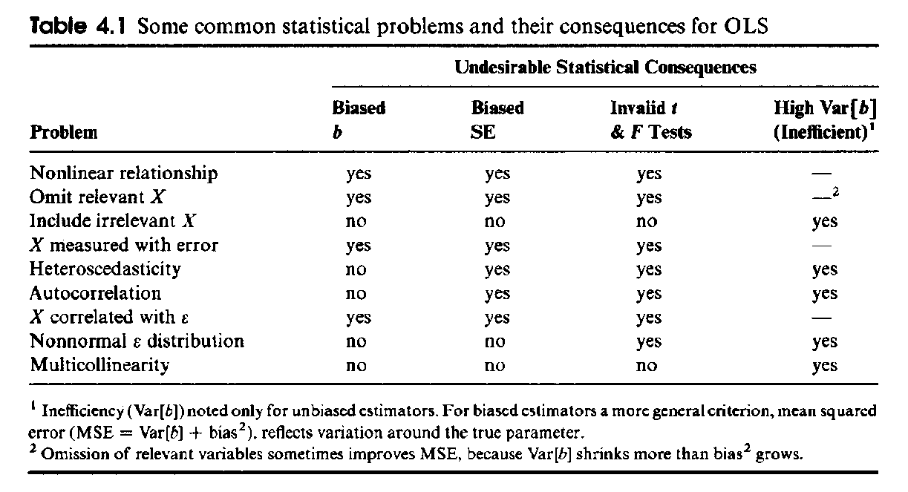
Notes:
[a] Only if \(b_k\) is unbiased then it can be efficient.
[b] SE refers to the estimate of the standard error of the disturbances, that is, \(SE = \sqrt{\frac{\mathbf{e}^T \cdot \mathbf{e}}{n-K}} = \sqrt{\frac{\sum_{i=1}^n e_i^2}{n-K}}\), which is used in many regression statistics.
3 Identifying and Overcoming some Assumption Violations
Perform bivariate scatterplots (or scatterplot matrix). See HAM Figure 4.1:
First step of analysis: Deal with non-linearity first (e.g., perform an approximate Box-Cox transformation , quadratic terms, interaction terms etc.) before investigating other model violations.
The linear correlation coefficients conceals non-linear relationships. In contrast, visualization of the pairwise relationships in scatterplots are more informative.
Diagonal: Show the distribution of variables (look for skewness, multimodality etc.)
Y-X combinations: potentially poor impact variables (Change in # People), potential heteroscedasticity, non-linearity and outliers. Make sure that the dependent variable is the first in the list of variables.
X-X combinations: potential multicollinearity among pairs of independent variables.
If X is a factor then explore its relationship with Y by a side-by-side boxplot and not with a scatterplot, which is reserved for metric variables.
3.1 Residuals versus Predicted Y Plots
Recall: The OLS estimator is designed in a way that the residuals and the predicted values are linearly uncorrelated. Thus, we would not expect to see any systematic pattern in their scatterplot.
Uncovers problems: recall HAM Fig. 2.11 [a] for influential cases, [b] curvilinear relations, [c] non-normal residual distribution and [d] heteroscedasticity.
Heteroscedasticity is associated with non-constant variance in the disturbances (as represented by the residuals). This non-constant variance may be systematically associated with
[a] the level of an independent variable in the model \(X_j\) and, therefore, the predicted dependent variable \(\hat{Y}\).
[b] any other variable not included in the regression model.
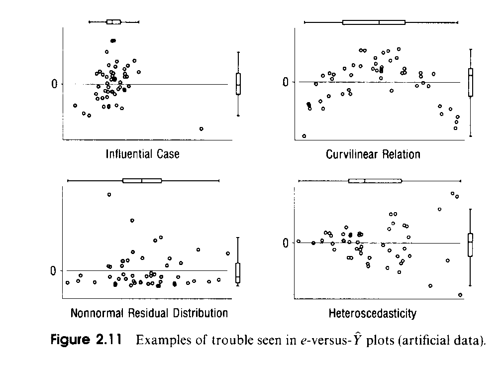
Example for heteroscedasticity: rates \(r_i = \frac{x_i}{n_i}\) calculated in areas with a large population base \(n_i\) usually have a lower variance (i.e., uncertainty) than rates of areas with a smaller population base. This applies in particular to census data. The variance of a rate is
\[Var(r_i) = \frac{r_i \cdot (1 - r_i)}{n_i}\]
Heteroscedasticity leads to inefficient estimators (=> invalid t-tests and F-test). However, the estimated regression coefficients remain unbiased.
Heteroscedasticity can be accommodated by weighted regression using the Feasible General Least Squares estimator. Maximum likelihood allows you to estimate the underlying covariance matrix \(Cov(\boldsymbol{\varepsilon})\). (both topics are discussed in the next lecture)
See HAM Figs 4.3 and 4.4 for heteroscedasticity. For large, predicted water consumption the associated prediction error becomes larger.
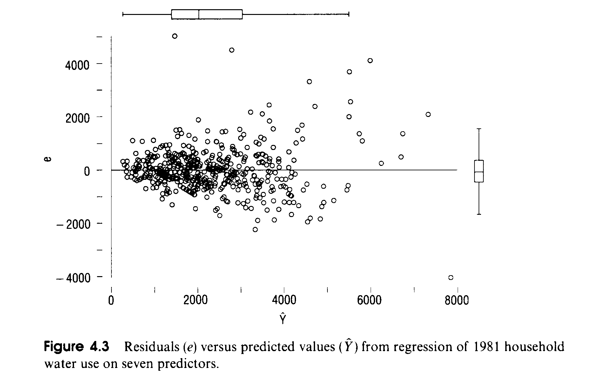
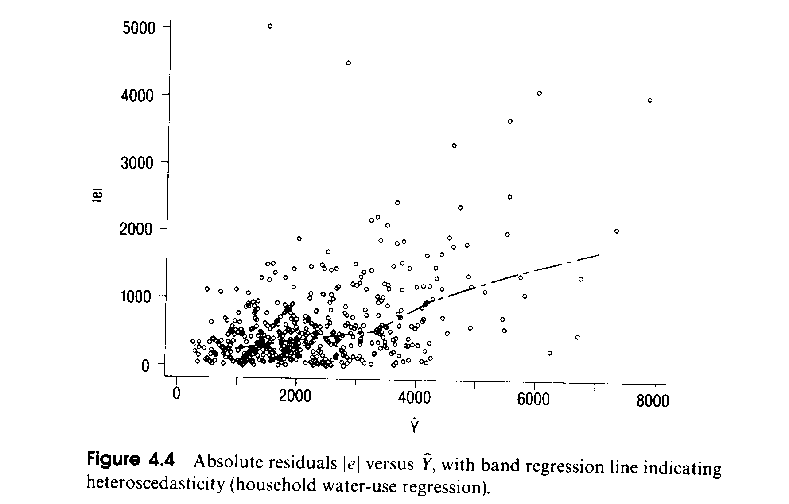
- Heteroscedasticity usually leads to an error distribution with higher kurtosis (distribution with heavier tails where the tails become more influential for the OLS estimator).
3.2 Non-normality
Problem: t and F-test become unreliable for small sample sizes.
Problem: Observations in heavy-tails (outliers) have a substantially stronger impact on the estimates because their residuals enter inflated by the square into the OLS estimation equation:
Let \(e_i^* = 2 \cdot e_i\) Thus observation \(i\) has 4-times the weight in OLS than it would if this residual just would be \(e_i\).
There are several ways to deal with these problems:
[a] transformations to pull outlying observations into the ensemble of data points, then use OLS,
[b] down weighting extreme observations and use of OLS,
[c] robust non-parametric estimation methods (see HAM Chapter 6),
[d] generate Bootstrap simulations to obtain the distribution of the estimated parameters and, therefore, their associated standard errors (see HAM Appendix 2).
3.3 Residual Analysis
- How to standardize residuals?
A first choice would be to use \(s_e^2 = RSS/(n - K)\). This ignores the increase in the variance of the residuals the further an observation moves away from \(\bar{X}\).
Recall: the confidence interval around a regression line gets wider as we move away from \((\bar{X}, \bar{Y})\).
The variance of the residuals \(e_i = y_i - \hat{y}_i\) is \(Var(e_i) = s_e^2 \cdot (1 - h_{ii})\) where \(h_{ii}\) is the i-th element on the diagonal of the hat matrix \(\mathbf{H} = \mathbf{X} \cdot (\mathbf{X}^T \cdot \mathbf{X})^{-1} \cdot \mathbf{X}^T\).
Therefore, the standardized residuals become: \(z_i = \frac{e_i}{s_e \cdot \sqrt{1-h_{ii}}}\). However, their exact distribution is unknown.
Corrective approach: the studentized residuals are with \(t_i = \frac{e_i}{s_{e(i)} \cdot \sqrt{1-h_{ii}}}\) used. These residuals follow a t-distribution with \(df = n - K - 1\) because the numerator and denominator of \(t_i\) are independent.
\(s_{e(i)}\) is the estimated standard deviation of the residuals with the \(i^{th}\) case being deleted.
Studentized residuals are based on an augmented regression model:
\[E(y_i) = \beta_0 + \beta_1 \cdot X_{i1} + \cdots + \beta_{K-1} \cdot X_{i,K-1} + \delta_i \cdot I_i\]
where \(I_i = (0, \ldots, 0, \underbrace{1}_{i^{th}\ observation}, 0, \ldots, 0)^T\) is a dummy variable that is only 1 for the \(i^{th}\) observation and otherwise zero.
This means that we treat the \(i^{th}\) case as a special case from a different regression regime.
The inclusion of this dummy variable forces the residual of that particular observation to become zero. The null hypothesis becomes \(H_0: \delta_i = 0\), which leads to the t-test mentioned above.
We run into the problem performing multiple testing on the same dataset, which inflates the \(\alpha\)-error.
Therefore, one should use an adjusted \(\alpha\)-error for the individual tests to identify significant individual tests.
The Bonferroni adjustment with a reduced critical value \(\alpha^* = \alpha/({\#\ of\ tests})\) downwards. It is one potential choice of dealing with the multiple testing error for a small number of tests.
These adjusted significance levels are reported by the function
car::influenceIndexPlot()Outlying observations are best investigated using studentized residuals.
3.4 Leverage: Extreme observations with regards to the X variables
It only focuses on the distribution of the independent variables.
The diagonal elements \(h_{ii}\) on the hat matrix \(\mathbf{H} = \mathbf{X} \cdot (\mathbf{X}^T \cdot \mathbf{X})^{-1} \cdot \mathbf{X}^T\) measure, in relative terms, the elliptical distance of the \(i^{th}\) observations from the center \((\bar{x}_1, \ldots \bar{x}_{K-1})^T\) of all independent variables.
The potential range of the leverage is \(h_{ii} = [1/n, 1]\) with a mean of \(\bar{h}_{ii} = K/n\)
A leverage of \(h_{ii} > 0.2\) is deemed risky because the \(i^{th}\) has a large impact on the fitted model.
An alternative critical value is \(h_{ii} > 2 \cdot K/n\) with no more than 5% of the hat-values exceeding this value
See Ham Fig 4.14
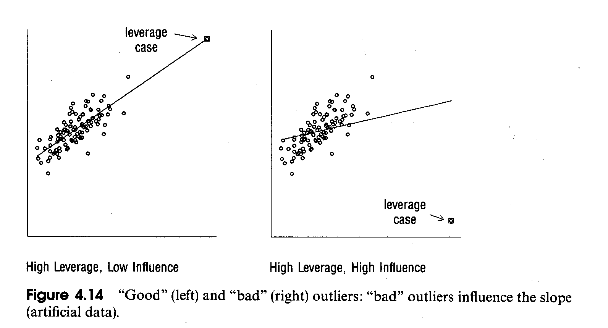
3.5 Influential combinations of Y-X
We take both the dependent and the independent variables into account.
Deletion of an influential case changes the parameter estimates substantially.
Influential case analysis takes all \(X\) variables and the \(Y\) variable simultaneously into account.
Discuss FOX Fig 11.1 and Fig 11.4 for the impact of influential cases
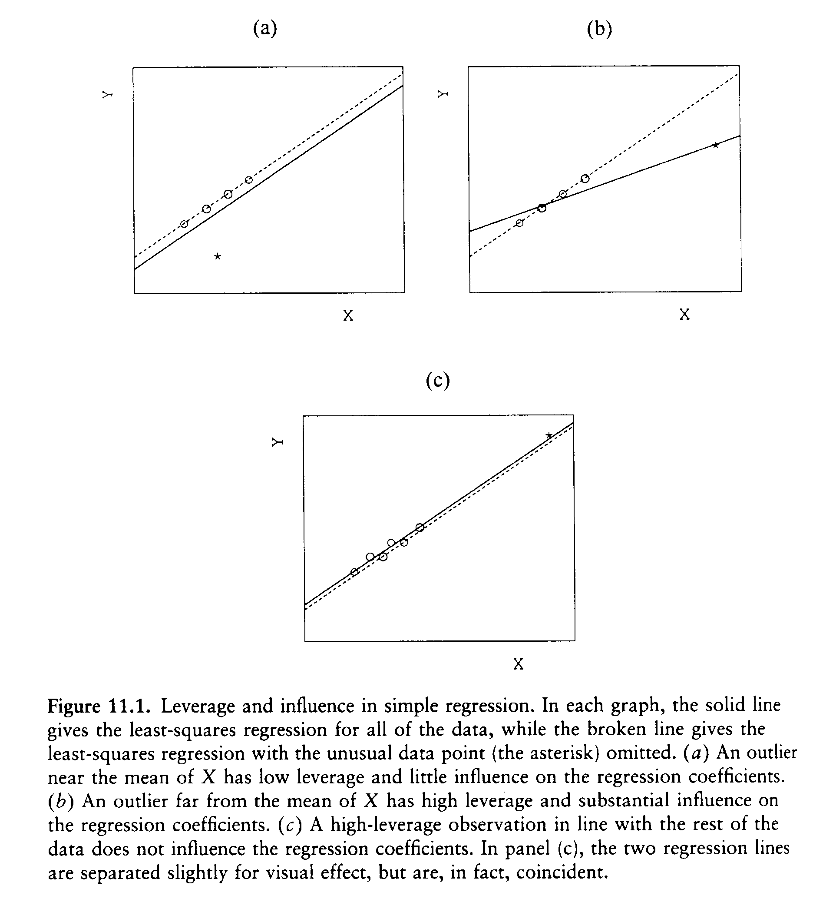
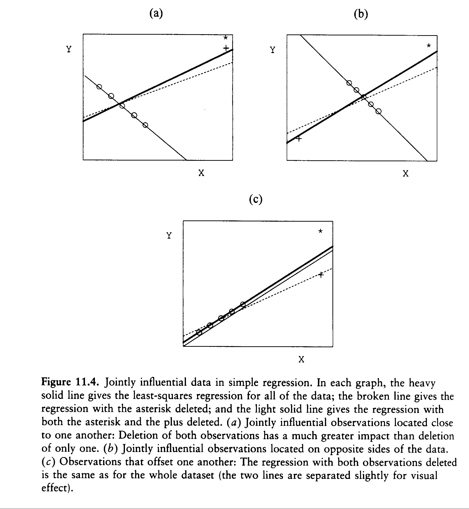
- DFBETAS
Underlying idea: re-estimated the regression coefficients \(b_{k(i)}\) with the i-th case deleted and standardized the difference \(b_k - b_{k(i)}\) between full and reduced regression coefficients.
An individual variable k for each case i has a \(DFBETAS_{ik} = \frac{b_k - b_{k(i)}}{s_{e(i)}/\sqrt{RSS_k}}\) with \(RSS_k\) being the \(k^{th}\) independent variable regressed on the remaining independent variables without deleting the \(i^{th}\) observation. The term \(s_{e(i)}\) is the residual standard deviation after the \(i^{th}\) observation has been deleted. Recall, \(SE_{b_k} \propto s_e/\sqrt{RSS_k}\).
\(DFBETAS_{ik}\) asks the question “By how many standard errors \(s_{e(i)}/\sqrt{RSS_k}\) does \(b_k\) change, if we drop \(i^{th}\) case”
Potential critical values:
[a] External scaling: \(|DFBETAS_{ik}| > 2/\sqrt{n}\)
[b] Internal scaling by Box-plots, gaps in the distribution etc.
Proportional leverage plot with points weighted by \(|DFBETAS_{ik}|\).
Remember: leverage plots show the residuals of the dependent and independent variables after controlling for all other variables in the model.
Influential cases may cluster in the plot (HAM Fig 4.11).
Counterbalancing cases. See HAM Fig 4.12.
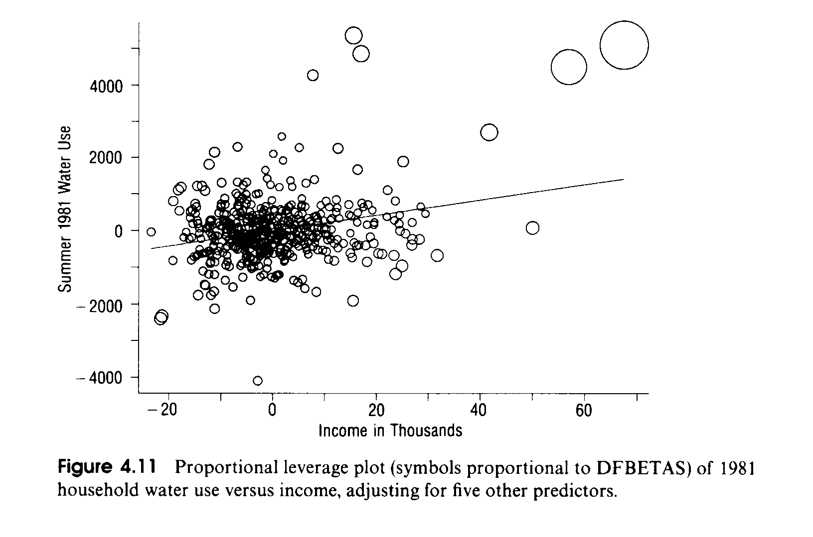
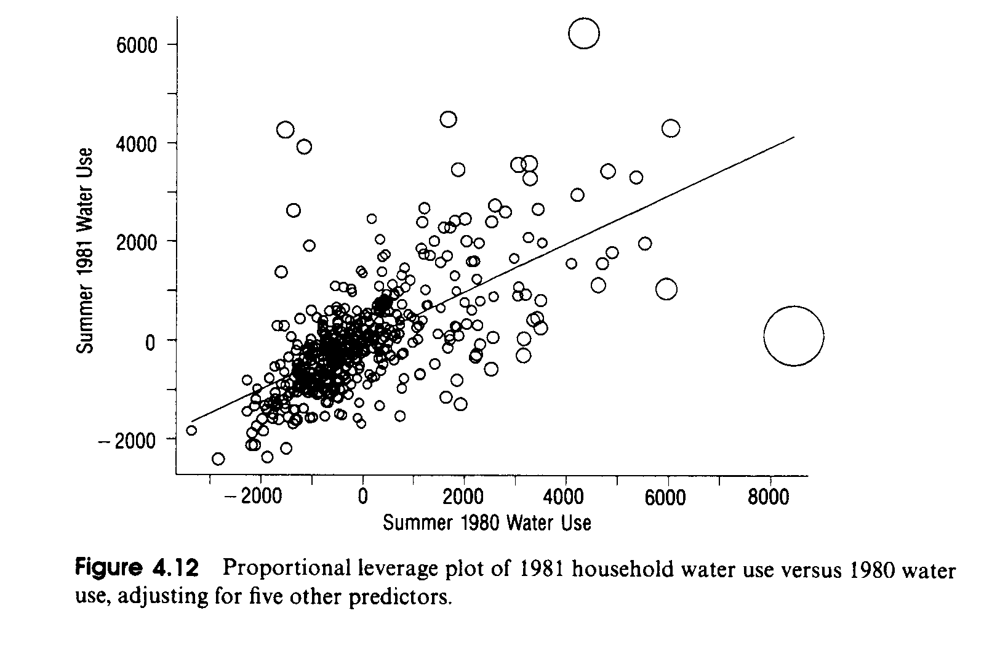
- Cook’s Distance (HAM p 132)
It measures the influence of the i-th case on the model as a whole rather than on individual partial regression coefficients.
It combines the size of the standardized residuals and the leverage:
\[D_i = \frac{z_i^2 \cdot h_{ii}}{K \cdot (1-h_{ii})}\]
with \(z_i^2\) being the standardized regression residuals.
A critical value is \(D_i > 4/n\)
- Technically the Cook’s distance is equivalent to:
\[D_i = \frac{(\mathbf{b} - \mathbf{b}_{(-i)})^T \cdot (\mathbf{X}^T \cdot \mathbf{X})^{-1} \cdot (\mathbf{b} - \mathbf{b}_{(-i)})}{K \cdot \hat{\sigma}^2}\]
3.6 Tukey Test
The Tukey test evaluates whether by adding a squared term of an independent variable, which is already in the model, improves the model fit.
It is implemented in the function
car::residualPlots(), whichProvides a plot of a quadratic specification to for a particular independent variable (\(\beta_k \cdot X_k + \beta_{k2} \cdot X_k^2\)) against the residuals.
A \(t\)-test, that evaluates whether the quadratic term \(\beta_{k2} \cdot X_k^2\) is significant.
The global Tukey test adds the squared predicted values (remember that the predicted value is a combination of all independent variables) to the model and performs a \(t\)-test, whether this term is significant.
Note: A model, which was already adjusted according to the Tukey test by adding \(\beta_{k2} \cdot X_k^2\), should not be tested again for a quadratic relationship. A positive test now would indicate that the fourth power should be added to the model by skipping any third order term. Powers, higher than the square, become difficult to interpret and risk over-modelling the data.
3.7 Dealing with influential cases and outliers
- Hamilton example of using a collection of extreme value statistics:
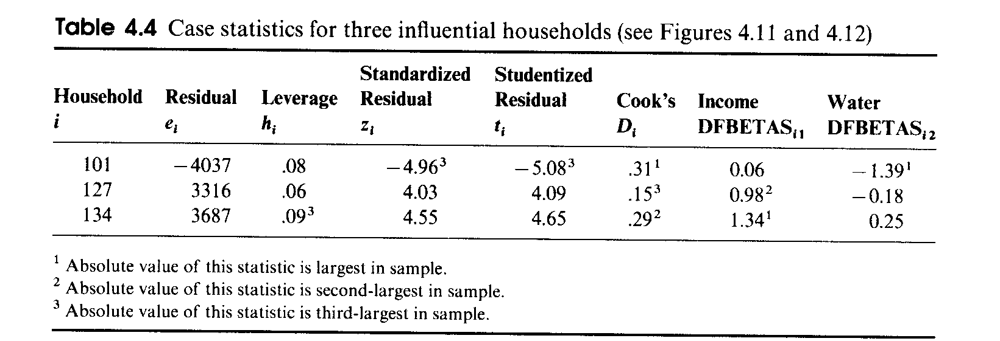
In general, one should look for cases that are consistently “extreme”.
- Overcoming “extreme” observations:
Search for additional explanatory variables, which may explain why particular cases appear to be extreme.
If a case appears to be affected by measurement errors,
[a] “polish” the measurement,
[b] weigh the case down (Hamilton Chapter 6) or
[c] at the extreme drop the case.
If a case appears to come from a different population, drop the case or incorporate the structural difference through other means, e.g., dummy variables and interaction effects.
Apply a data transformation.
- Always asked yourself the question: does a particular observation belong to the population about which you would like to make a statement or does it signify something totally different.
3.8 Multicollinearity
The tolerance of variable \(\mathbf{x}_k\), relative to the other variables in the model, is the variance of \(\mathbf{x}_k\) not shared by the remaining independent variables: \(tol = 1 - R_k^2\).
\(\Rightarrow\) Large tolerances are better than smaller ones. The \(R_k^2\) is the explained sum of squares of the \(k^{th}\) independent variable \(\mathbf{x}_k\) when regressed on all the remaining independent variables \(\mathbf{X}_{[-k]}\).
Strong bivariate correlation among the independent variables is only a first indicator for multicollinearity.
However, the correlation among the estimated regression parameters (see HAM eq 4.16) is a better indicator, because it takes simultaneously all pairwise correlations among the independent variables into consideration (because of the simultaneous structure of the inverse \((\mathbf{X}^T \cdot \mathbf{X})^{-1}\)).
Effects of multicollinearity:
Inflation of standard error of parameter estimate \(\Rightarrow\) t-test may not reject \(H_0: \beta_k = 0\), even though it is different from zero
The estimated regression parameters may exhibit counterintuitive signs.
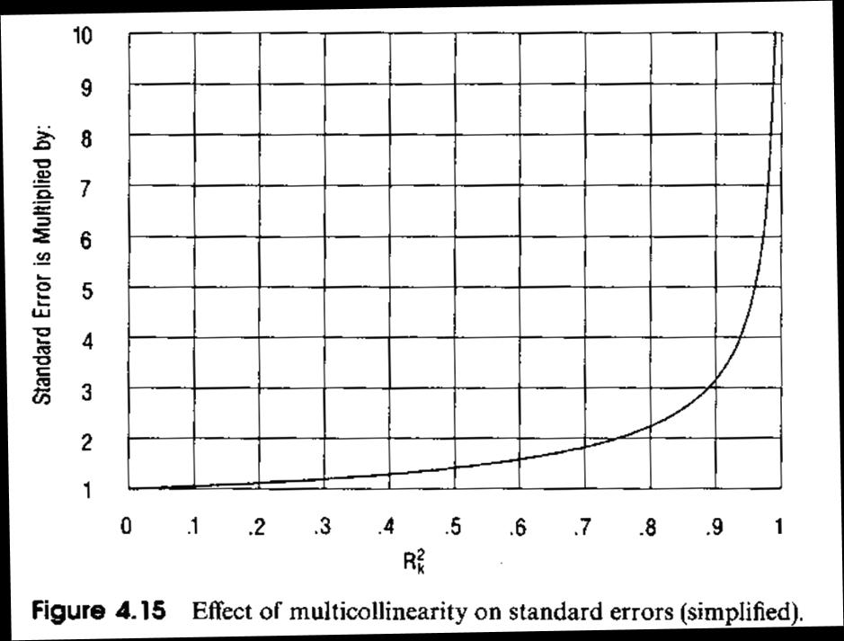
The standard error of \(b_k\) can be re-written as \(SE_{b_k} = \frac{1}{\sqrt{(1-R_k^2)}} \cdot \frac{s_e}{\sqrt{TSS_k}}\) with the tolerance of the k-th independent variable \(1 - R_k^2\) and \(TSS_k = \sum(x_{ik} - \bar{x}_k)^2\) the total sum of squares of the k-th independent variable.
Figure 4.15 shows how the standard error is inflated by increasing multicollinearity \(R_k^2\).
The term \(VIF = \frac{1}{(1-R_k^2)}\) is called the variance inflation factor. Its impact on the standard error of \(b_k\) is displayed in HAM Fig 4.15.
Note: R’s
car::vif()function reports the VIF in terms of variances and not standard deviations.How to handle multicollinearity (see HAM p 136):
Keep highly correlated but significant variables in the model but be aware of their impact.
Drop one multicollinear variable at a time because it is redundant. But do not drop all simultaneously.
In general, keep that variable for which you find the most logical interpretation.
Combine redundant variables into principal components scores features which are uncorrelated among each other (HAM Chapter 8).
Collect more data. This decreases the VIF due to an increase in the denominator \(TSS_k = \sum(x_{ik} - \bar{x}_k)^2\).
4 Appendix: Serial Autocorrelation
See the online book in UTD’s library Cowpertwait & Metcalfe (2009). Introductory Time Series with R. Springer Verlag
- Each time-series can be decomposed into two components:
The expected value, such as cyclic behavior or trends, can be modeled with the use of exogenous information.
This is called the first order component.
The covariance in the random error terms leads to a stochastic random process. Here we want to learn from the sample observation about the internal covariance structure of the underlying data generating process.
This is called the second order component.
- If the first order component is mis-specified then the covariance structure of the underlying data generating process cannot be properly identified.
4.1 What is autocorrelation?
What is autocorrelation and how does it differ from bivariate correlation?
Hamilton’s definition (page 118 top): “Autocorrelation refers to correlation between values of the same variable across different cases”.
We need to operationalize the concept of internal correlation among observations. This implies that our observations are internally structured (i.e., have an arrangement) and that the observations are stochastically linked together with respect to this internal structure.
4.2 Identifying Autocorrelation in Residuals
In order to test for autocorrelation an internal order of the observations needs to be assumed.
In the temporal context this order relates to the past influencing the presence which in turn will influence the future.
In a spatial context, neighboring observations may mutually influence each other.
In a time series the residuals \(\mathbf{e} = \mathbf{M} \cdot \mathbf{y}\) are ordered sequentially with \(\mathbf{e} = (e_{t_0}, e_{t_1}, e_{t_2}, \ldots, e_{t_n})^T\) with \(Cov(\varepsilon_{t_i}, \varepsilon_{t_{i+1}}) \neq 0\) for the underlying population disturbances.
For strong positive autocorrelation consecutive residuals are similar, that is, \(|e_{t_i} - e_{t_{i-1}}| \gtrsim 0\), and for strong negative autocorrelation \(|e_{t_i} - e_{t_{i-1}}| \lesssim 2 \cdot |e_{t_i}|\) because consecutive residuals have alternating signs.
This property of the difference between consecutive residuals gives rise the Durbin-Watson d-statistic:
\[d = \frac{\sum_{i=2}^n (e_{t_i} - e_{t_{i-1}})^2}{\sum_{i=1}^n e_{t_i}^2}\]
The Durbin-Watson statistic can be written as a ratio of quadratic forms. See the R-script
DWTestInMatrixForm.R.The expected value of the Durbin-Watson d-statistic under the assumption of independence is \(E(d) = 2\).
An observed value \(0 < d < 2\) indicates the presence of positive autocorrelation.
An observed value \(2 < d < 4\) indicates the presence of negative autocorrelation.
The distribution of the Durbin-Watson d-statistic under the assumption of independence is difficult to evaluate (see Table A4.4 in Hamilton).